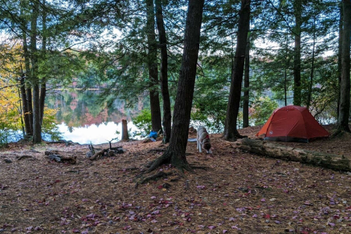
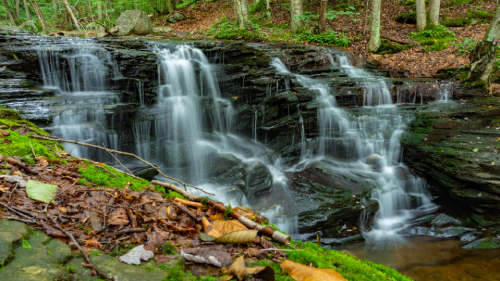

The Loyalsock State Park, also known as the Loyalsock State Forest, is located about a 30-35mins away from WIlliamsport and spans over multiple counties. the forest spans over 114,5512
acres of land over 3 counties Sullivan, Lycoming, and Bradford.
When it comes to the Forest since it is state owned they maintain it with the highest degree to make sure the water is pure, trails/campsotes are maintained and well kept, plants and animals are well kept and healthy.
With all of this is is managed and supervised by the State Forest Resource Management Plan, and will be for the next year from 2022.
With the forest also being a state park it offers many activities on and off the trail, you can of course hike on the trail but also camp, mountain biking, and even swimming. You can even explore into
Fishing and Hiking but with the fishing you can not boat on the water because of it being rapids in the water it is deemed unsafe, but also to get to those places it takes a little bit. On The trails if you actually go off of it a little bit
you can actually find water hols in the creek that you can get to (if you are brave enough) to swim in.
One neat thing about this forest is it houses a 50 mile trail that is part of a bigger trail called the Appalacian Mountain Trail. This trail stretches forom Georgia up to Maine and goes through the Appalacian Mountains, they say that this trail is one of the most grueling
and can take up to several months.